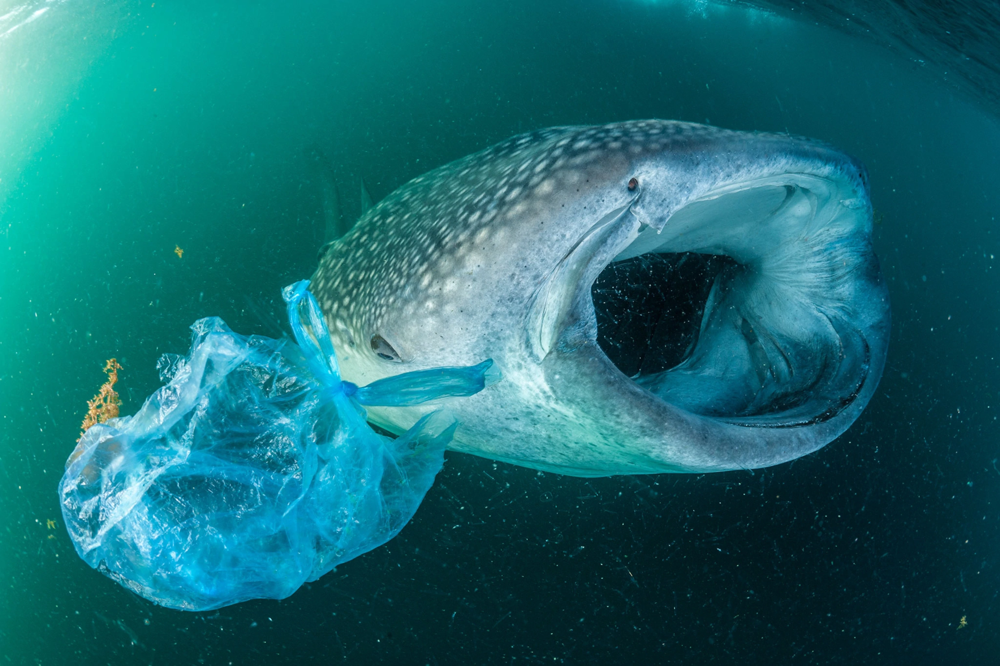
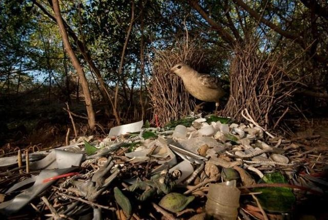
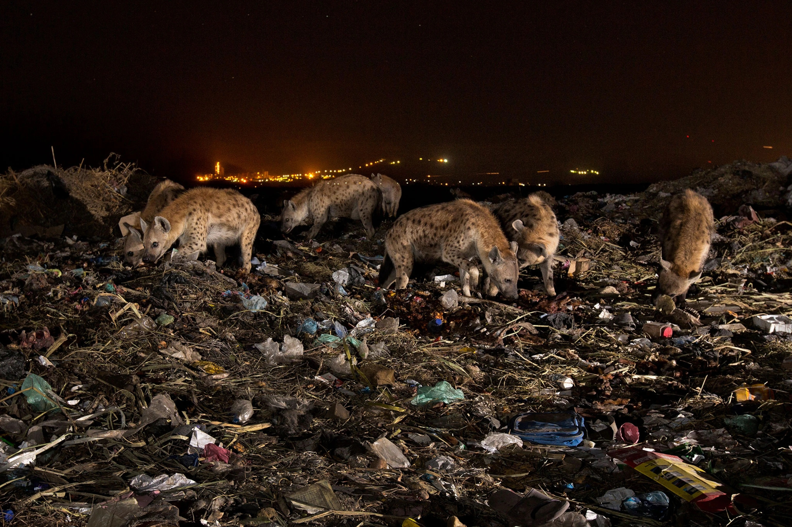

Plastic Pollution
Plastic pollution has become one of the most pressing environmental issues, as rapidly increasing production of disposable plastic products overwhelms the world’s ability to deal with them. Plastic pollution is most visible in developing Asian and African nations, where garbage collection systems are often inefficient or nonexistent. But the developed world, especially in countries with low recycling rates, also has trouble properly collecting discarded plastics. Plastic trash has become so ubiquitous it has prompted efforts to write a global treaty negotiated by the United Nations.
How did this happen?
Plastics made from fossil fuels are just over a century old. Production and development of thousands of new plastic products accelerated after World War II, so transforming the modern age that life without plastics would be unrecognizable today. Plastics revolutionized medicine with life-saving devices, made space travel possible, lightened cars and jets—saving fuel and pollution—and saved lives with helmets, incubators, and equipment for clean drinking water.
The conveniences plastics offer, however, led to a throw-away culture that reveals the material’s dark side: today, single-use plastics account for 40 percent of the plastic produced every year. Many of these products, such as plastic bags and food wrappers, have a lifespan of mere minutes to hours, yet they may persist in the environment for hundreds of years.
 A whale shark swims beside a plastic bag in the Gulf of Aden near Yemen. Although whale sharks are the biggest fish in the sea, they're still threatened by ingesting small bits of plastic.Photography by Thomas P. Peschak, Nat Geo Image Collection. ·
 A great bowerbird in Queensland, Australia, decorates its home with broken glass, plastic toys, and other pieces of human trash.Photography by Tim Laman, Nat Geo Image Collection. ·
 A pack of hyenas forage through mounds of trash at the city dump in Mekelle, Ethiopia. Bits of plastic are littered among leftover food scraps and bones discarded by humans.Photography by Karine Aigner, Nat Geo Image Collection. ·
How plastics move around the world
Most of the plastic trash in the oceans, Earth’s last sink, flows from land. Trash is also carried to sea by major rivers, which act as conveyor belts, picking up more and more trash as they move downstream. Once at sea, much of the plastic trash remains in coastal waters. But once caught up in ocean currents, it can be transported around the world.
On Henderson Island, an uninhabited atoll in the Pitcairn Group isolated halfway between Chile and New Zealand, scientists found plastic items from Russia, the United States, Europe, South America, Japan, and China. They were carried to the South Pacific by the South Pacific gyre, a circular ocean current.
Harm to wildlife
Millions of animals are killed by plastics every year, from birds to fish to other marine organisms. Nearly 700 species, including endangered ones, are known to have been affected by plastics. Nearly every species of seabird eats plastics.
Most of the deaths to animals are caused by entanglement or starvation. Seals, whales, turtles, and other animals are strangled by abandoned fishing gear or discarded six-pack rings. Microplastics have been found in more than 100 aquatic species, including fish, shrimp, and mussels destined for our dinner plates. In many cases, these tiny bits pass through the digestive system and are expelled without consequence. But plastics have also been found to have blocked digestive tracts or pierced organs, causing death. Stomachs so packed with plastics reduce the urge to eat, causing starvation.
Plastics have been consumed by land-based animals, including elephants, hyenas, zebras, tigers, camels, cattle, and other large mammals, in some cases causing death.
Tests have also confirmed liver and cell damage and disruptions to reproductive systems, prompting some species, such as oysters, to produce fewer eggs. New research shows that larval fish are eating nanofibers in the first days of life, raising new questions about the effects of plastics on fish populations.
Stemming the plastic tide
Once in the ocean, it is difficult—if not impossible—to retrieve plastic waste. Mechanical systems, such as Mr. Trash Wheel, a litter interceptor in Maryland’s Baltimore Harbor, can be effective at picking up large pieces of plastic, such as foam cups and food containers, from inland waters. But once plastics break down into microplastics and drift throughout the water column in the open ocean, they are virtually impossible to recover.
38 Million pieces of plastic trash cover this remote island.The solution is to prevent plastic waste from entering rivers and seas in the first place, many scientists and conservationists—including the National Geographic Society—say. This could be accomplished with improved waste management systems and recycling, better product design that takes into account the short life of disposable packaging, and reduction in manufacturing of unnecessary single-use plastics.
Article credit to Laura Parker · Images by · Video by National Geography
10 Ways to reduce plastic pollution
1. Wean yourself off disposable plastics. Ninety percent of the plastic items in our daily lives are used once and then chucked: grocery bags, plastic wrap, disposable cutlery, straws, coffee-cup lids. Take note of how often you rely on these products and replace them with reusable versions. It only takes a few times of bringing your own bags to the store, silverware to the office, or travel mug to Starbucks before it becomes habit.
2. Stop buying water. Each year, close to 20 billion plastic bottles are tossed in the trash. Carry a reusable bottle in your bag, and you’ll never be caught having to resort to a Poland Spring or Evian again. If you’re nervous about the quality of your local tap water, look for a model with a built-in filter.
3. Boycott microbeads. Those little plastic scrubbers found in so many beauty products—facial scrubs, toothpaste, body washes—might look harmless, but their tiny size allows them to slip through water-treatment plants. Unfortunately, they also look just like food to some marine animals. Opt for products with natural exfoliants, like oatmeal or salt, instead.
4. Cook more. Not only is it healthier, but making your own meals doesn’t involve takeout containers or doggy bags. For those times when you do order in or eat out, tell the establishment you don’t need any plastic cutlery or, for some serious extra credit, bring your own food-storage containers to restaurants for leftovers.
5. Purchase items secondhand. New toys and electronic gadgets, especially, come with all kinds of plastic packaging—from those frustrating hard-to-crack shells to twisty ties. Search the shelves of thrift stores, neighborhood garage sales, or online postings for items that are just as good when previously used. You’ll save yourself a few bucks, too.
6. Recycle (duh). It seems obvious, but we’re not doing a great job of it. For example, less than 14 percent of plastic packaging is recycled. Confused about what can and can’t go in the bin? Check out the number on the bottom of the container. Most beverage and liquid cleaner bottles will be #1 (PET), which is commonly accepted by most curbside recycling companies. Containers marked #2 (HDPE; typically slightly heavier-duty bottles for milk, juice, and laundry detergent) and #5 (PP; plastic cutlery, yogurt and margarine tubs, ketchup bottles) are also recyclable in some areas. For the specifics on your area, check out Earth911.org’s recycling directory.
7. Support a bag tax or ban. Urge your elected officials to follow the lead of those in San Francisco, Chicago, and close to 150 other cities and counties by introducing or supporting legislation that would make plastic-bag use less desirable.
8. Buy in bulk. Single-serving yogurts, travel-size toiletries, tiny packages of nuts—consider the product-to-packaging ratio of items you tend to buy often and select the bigger container instead of buying several smaller ones over time.
9. Bring your own garment bag to the dry cleaner. Invest in a zippered fabric bag and request that your cleaned items be returned in it instead of sheathed in plastic. (And while you’re at it, make sure you’re frequenting a dry cleaner that skips the perc, a toxic chemical found in some cleaning solvents.)
10. Put pressure on manufacturers. Though we can make a difference through our own habits, corporations obviously have a much bigger footprint. If you believe a company could be smarter about its packaging, make your voice heard. Write a letter, send a tweet, or hit them where it really hurts: Give your money to a more sustainable competitor.
Article credit to Sarah Engler